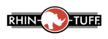

En 1994 Marvin Whiteman fue contactado para diseñar una pieza para una maquina perforadora de papel de sobremesa. Encontrando que podian fabricar perforadoras de papel mas eficientes crearon Performance Design Inc y construyeron la promera perforadora de sobremesa con punzones intercambiables llamados VersaPunch. Debido a la necesidad de los clientes de mayor flexibilidad fueron añadiendo modulos creando equipos que se podian adaptar a diferentes necesidades. Estos nuevos productos fueron nombrados Rhin-o-tuff. Hoy Rhin-o-tuff ofrece una variedad de equipos de perforacion y encuadernado de altacalidad y durabilidad para miles de clientes comerciales y corporativos.